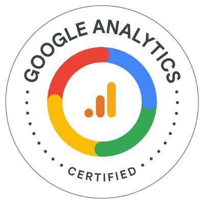
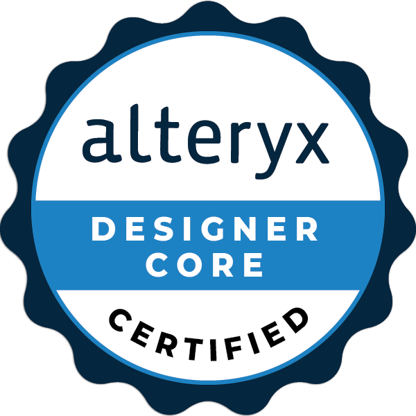

Diplômée d’un MBA en Data Engineering, je ne me limite pas à un seul rôle : je crée, j’expérimente et j’innove.
Polyvalente et déterminée, j’aime sortir de ma zone de confort et apprendre sur le terrain.
Aujourd’hui, je cherche un CDI où je pourrai mettre cette curiosité et cette rigueur au service de projets data ambitieux et humains.
MBA graduate in Data Engineering, I don’t limit myself to one role — I create, experiment, and innovate.
Versatile and driven, I enjoy stepping out of my comfort zone and learning by doing.
I’m now seeking a full-time role where I can bring this curiosity and precision to meaningful, data-driven projects.
Entre logique et créativité, la donnée est mon terrain de jeu.
Qui suis-je ?
J’aime chercher, comprendre et donner du sens aux données. Chaque projet est pour moi une occasion d’apprendre, de tester et d’améliorer mes approches.
Derrière chaque dashboard, il y a de la rigueur, de la curiosité et une vraie envie de créer de la valeur. Je crois en une data utile, claire et actionnable — au service des personnes qui la font vivre.
Parcours & Formation
Transformez la donnée en levier de performance, c'est ce que j'ai choisi de faire.
Mon parcours est un mélange assumé d'analytique, de technique et de design. De mes premiers projets web jusqu'à la conception de dashboards d'aide à la décision, j'ai toujours privilégié des approches visuelles, efficaces et exploitables.
- MBA Data Engineer (Paris) : Développement de solutions BI, automatisation des reportings, maîtrise des bases de données.
- Master Développement Web 3.0 & Science des données : Backend, frontend et analyse combinés.
- Bac+3 IA & Big Data : Machine Learning et projets concrets d'IA.
- Projets en entreprise (Senova, Inoni Tech) : Dashboards automatisés, IA appliquée, gains mesurables.
Ce qui me différencie :
- Capacité à livrer des analyses complètes, visuelles et automatisées.
- Réduction des tâches répétitives de reporting jusqu'à 80%.
- Des projets concrets avec un impact métier immédiat.
Mes Compétences
Compétences techniques et analytiques.
- Power BI : création de dashboards dynamiques et automatisation de reporting
- SQL : modélisation, requêtage, gestion de base de données
- Python : data cleaning, analyse, automatisation avec pandas et Streamlit
- Power Automate : export automatique de rapports, intégration de flux
- Looker Studio : visualisation cloud, storytelling data
- Data Quality : nettoyage, fiabilisation, contrôles de cohérence
- Gestion de projet : planification, coordination d'équipe, suivi
🎓 Mes Certifications

Certification Google Analytics

Certification Alteryx Designer Core
Certification Udemy Power Bi

Certification Power Query Excel